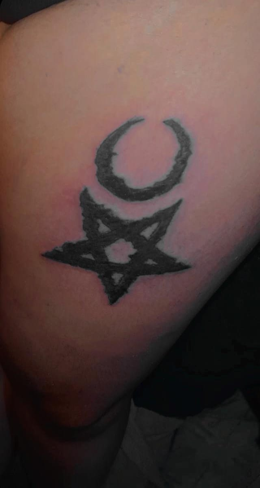
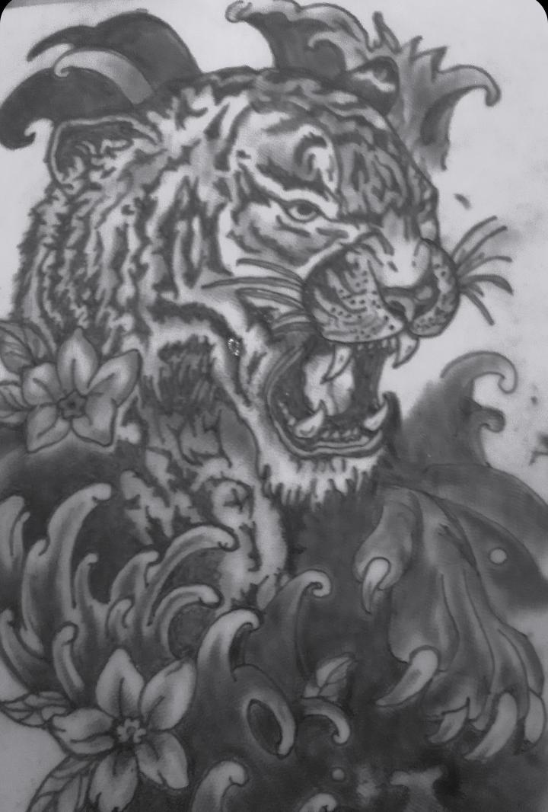
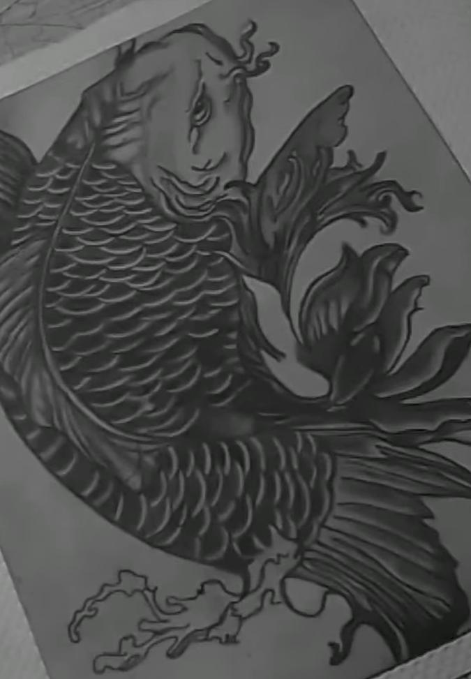

Estúdio de tatuagem em construção. Atendimento somente a domicílio por enquanto.
Aqui você é recebido com calma, café e conversa antes da agulha. Cada tatuagem nasce de um cuidado real com sua ideia, sua pele e seu conforto, do primeiro esboço à última sessão.
Não importa se é sua primeira tatuagem ou a décima: temos um artista dedicado a ouvir sua ideia e transformá-la com carinho, no ritmo que for confortável para você.
Traços finos e contínuos, ideais para desenhos delicados, letras e composições minimalistas.
Preto sólido, contraste forte e geometria precisa para peças de grande impacto visual.
Composições inspiradas em ornamentos clássicos, com riqueza de detalhes sobre preto profundo.
Contornos grossos e cores tradicionais, com releitura contemporânea de temas clássicos.
Uma seleção de peças feitas com carinho no estúdio, cada uma com uma pessoa e uma história por trás.



Pessoas acolhedoras antes de artistas talentosos. Escolha por estilo ou deixe a gente te indicar na conversa inicial.
Especialista em grandes composições geométricas de alto contraste.
Traço leve e preciso, referência em tatuagens delicadas e tipografia autoral.
Dez anos dedicados a contornos marcantes e cores tradicionais em preto e cinza.
Um processo simples e transparente, pensado para você se sentir seguro em cada etapa, da ideia à pele cicatrizada.
Conversamos sobre referências, local do corpo e tamanho ideal.
O artista cria uma arte exclusiva e ajusta com você antes da sessão.
Ambiente esterilizado, materiais descartáveis e pausas quando precisar.
Você recebe um guia de cuidados e acompanhamento pelas primeiras semanas.
“Cheguei nervosa para minha primeira tattoo e saí de lá acolhida, ouvida e apaixonada pelo resultado. Parece que fazem parte da família.
Sem compromisso: preencha o formulário e vamos conversar sobre ela com calma. Respondemos em até 24 horas.